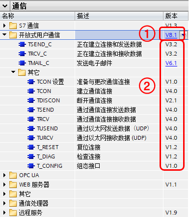

TIA PORTAL 软件内提供了以下指令：
开放式用户通信如图1所示。

图1 开放式用户通信指令
①指令集版本
②指令版本
开放式用户通信指令集由以上指令组成。每个版本 CPU 都可以支持多个版本的开放式用户通信指令集，见表1，建议使用默认的指令集版本也就是最高的版本，低版本指令集一般是用来低版本 CPU 程序移植到高版本 CPU 时用的。
| CPU 版本 | 支持的开放式用户通信指令集版本 |
|---|---|
| V1.0-V4.0 | V2.x-V3.x |
| V4.1 | V2.x-V4.x |
| V4.2-V4.3 | V2.x-V6.x |
| V4.4-V4.6 | V2.x-V8.x |
对于基本的 TCP、ISO ON TCP 以及 UDP 来说，指令集总体分为 V4.x 以下与 V4.x 及以上。
V4.x 以下所有指令集版本功能基本一致，只是内部微调；
V4.x 及以上所有指令集版本基本功能一致，变化较大是 V6.x 支持安全 TCP 通信，V8.x支持 TCONSettings 指令。此外 Tmail_C 这个发邮件指令在 V4.x 及以上所有指令集版本中变化很大。
对于 TCP、ISO ON TCP 通信
TSEND_C = TCON + TSEND + TDISCON
TRCV_C = TCON + TRCV + TDISCON
一般使用组合是：
对于 UDP 通信
一般使用组合是：
对于 TCP、ISO ON TCP 通信
TSEND_C = TCON + TSEND + TDISCON
TRCV_C = TCON + TRCV + TDISCON
对于 UDP 通信
TSEND_C = TCON + TUSEND + TDISCON
TRCV_C = TCON + TURCV + TDISCON
对于 TCP、ISO ON TCP 一般使用组合是：
对于 UDP 一般使用组合是：
| V4.x 以下指令集 | V4.x 及以上指令集 | |
|---|---|---|
| 连接管理的指令 TSEND_C 和 TRCV_C | ||
| 对 UDP 的支持 | 不支持 | 支持 |
| 连接建立 | 一个扫描周期 DONE=1 STATUS=0 | 一个扫描周期 DONE=0 STATUS=1 |
| 作业中 | STATUS=7002 |
|
| TCON | ||
| 客户端无法访问到服务器 | BUSY=1 不报错误，一直等待连接伙伴 | ERROR=1，重新连接需要重新触发 |
| 接收指令 TRCV_C、TRCV | ||
| TCP 变长接收 | LEN=65535 | ADHOC = True |
| 连接指令 TSEND_C、TRCV_C 、TCON | ||
| 连接参数 | TCON_Param |
|
| CP1243-1 | ||
| CP1243-1 使用 OUC 指令 | 不支持 | 支持 |
*V6.x 开始支持 TCON_IP_V4_SEC、V7.x 使用 V3.2 版本 CP1243-1 支持 TCON_QDN 和 TCON_QDN_SEC，其中“SEC”为安全 TCP 通信使用，“QDN”为域名访问。